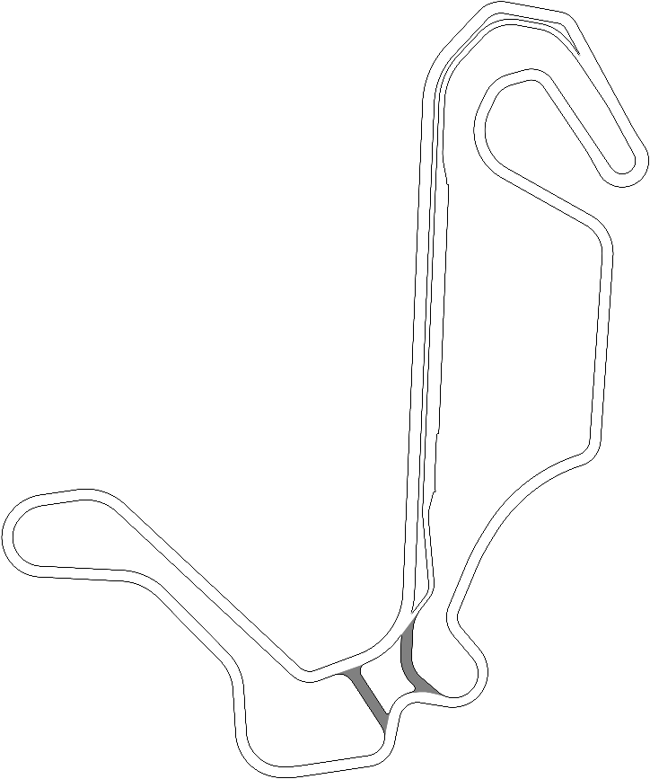

LAP TIMER ▾
×
LAP
—
CURRENT
—:——.———
BEST
—:——.———
LAST
—:——.———
Δ
—
SPEED
0
km/h
GEAR
N
RPM
800
αF
0.00
αR
0.00
κR
0.00
CRUISE
G-FORCE
0.00 G
INJE SPEEDIUM
AIDS
ABS
TC
1
ESC
TIRES (TEMP / WEAR)
F
—°C
0%
R
—°C
0%
BRAKES
F
—°C
R
—°C
GR86 SIM
W
가속
S
브레이크
A
/
D
조향
Space
핸드
[
/
]
기어
C
스키드
1
ABS
2
TC
3
ESC
4
TC레벨
L
랩HUD
R
리셋
H
도움말
Tire μ
Steer Max
Volume
RESET
CLEAR SKID